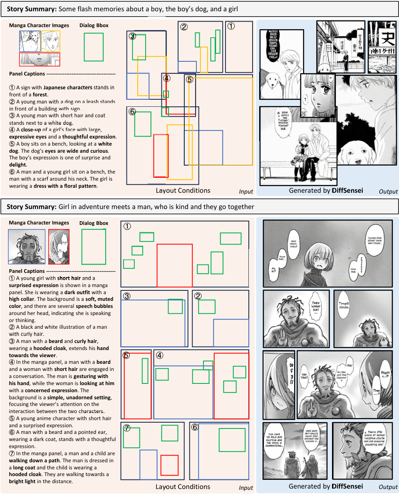
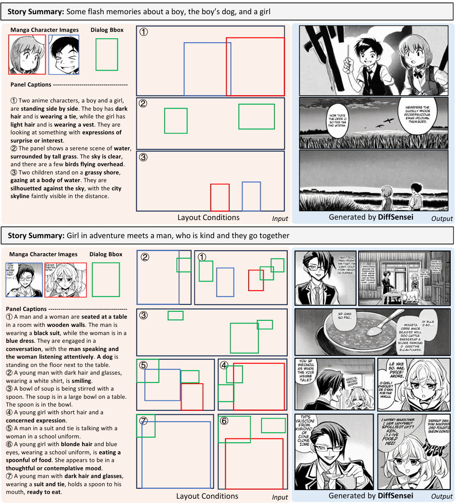

Gallary




More page results are in the PDF version at the top of the webpage.
Story visualization, the task of creating visual narratives from textual descriptions, has seen progress with text-to-image generation models. However, these models often lack effective control over character appearances and interactions, particularly in multi-character scenes. To address these limitations, we propose a new task: customized manga generation and introduce DiffSensei, an innovative framework specifically designed for generating manga with dynamic multi-character control. DiffSensei integrates a diffusion-based image generator with a multimodal large language model (MLLM) that acts as a text-compatible identity adapter. Our approach employs masked cross-attention to seamlessly incorporate character features, enabling precise layout control without direct pixel transfer. Additionally, the MLLM-based adapter adjusts character features to align with panel-specific text cues, allowing flexible adjustments in character expressions, poses, and actions. We also introduce MangaZero, a large-scale dataset tailored to this task, containing 43,264 manga pages and 427,147 annotated panels, supporting the visualization of varied character interactions and movements across sequential frames. Extensive experiments demonstrate that DiffSensei outperforms existing models, marking a significant advancement in manga generation by enabling text-adaptable character customization. The code, model, and dataset will be open-sourced to the community.

The architecture of DiffSensei. In the first stage, we train a multi-character customized manga image generation model with layout control. The dialog embedding is added to the noised latent after the first convolution layer. All the parameters in the U-Net and ieature extractor are trained. In the second stace, we finetune LoRA and resampler weights of an MLLM to adapt the source characte features corresponding to the text prompt. We use the model in the first stage as the image generator and freeze its weights.
article{wu2024diffsensei,
title={DiffSensei: Bridging Multi-Modal LLMs and Diffusion Models for Customized Manga Generation},
author={Jianzong Wu, Chao Tang, Jingbo Wang, Yanhong Zeng, Xiangtai Li, and Yunhai Tong},
journal={arXiv preprint arXiv:2412.07589},
year={2024},
}